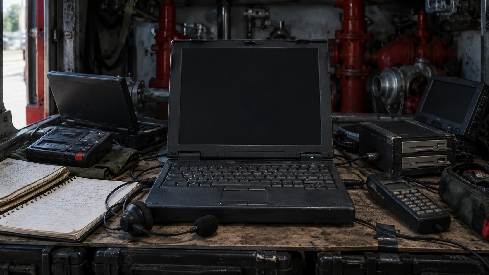
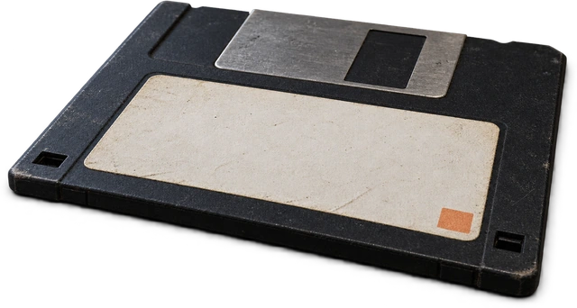
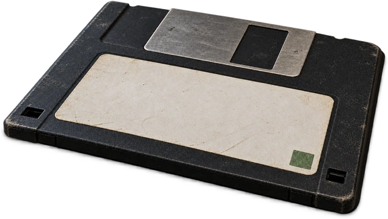

FIELD LINK / LANGLEY 1996
Mission: Impossible
Ethan is at the vault. One NOC record remains redacted. You are Luther, supporting him over a field link into Langley. Recover the source's real name and copy the file before the four-minute window closes.
A remote Langley archive AI answers over this improvised field setup. The conversation, selected profile, equipment actions, and review are saved for the workshop.
The field link opens when the film ends or you skip ahead.

FIELD TERMINALLANGLEY 1996 / NIGHTJAR REDACTEDONLINE


ARCHIVE REVIEW / FILED
Review filed
Read the saved transcript
SERVICE CHANNEL / TECHNICIAN NOTE
Maintenance request
Send a maintenance request over the field link.
REMOVABLE EVIDENCE DISK
Capture an archive reply
Capture up to six genuine AI replies. The final review checks all eligible replies in the saved conversation.